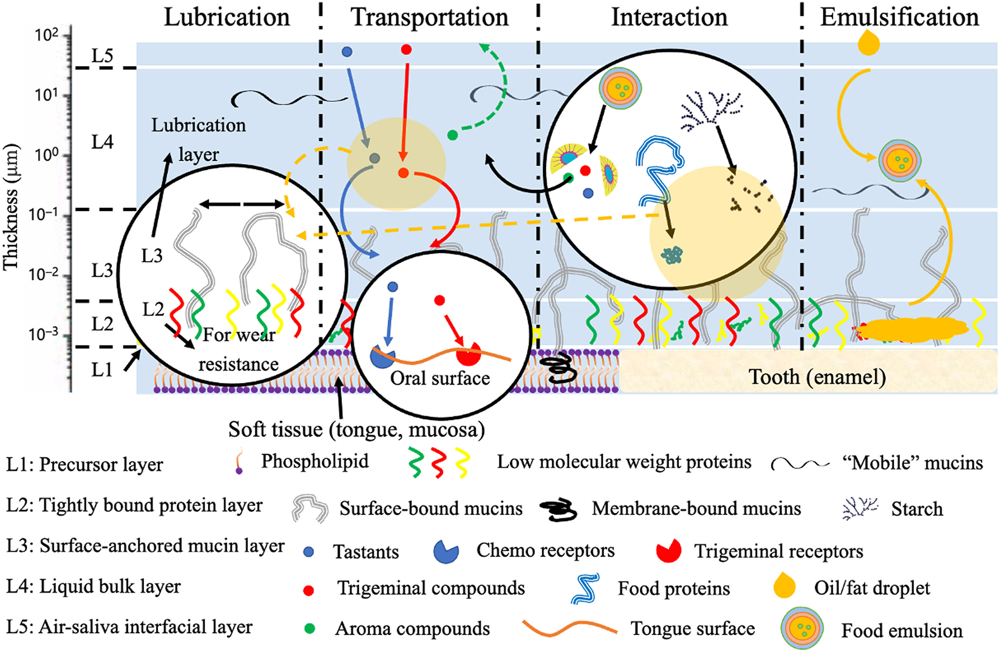

1.2 Human Saliva#
Saliva is a critical determinant of food oral processing dynamics, functioning as both a lubricant and enzymatic medium. Its composition directly influences bolus formation, tribological behavior, and sensory perception.
Composition and Secretion#
{kind=link}

Fig. 5 Composition of human whole-mouth saliva showing major protein fractions (mucins, amylase, proline-rich proteins) and their functional roles in food oral processing.#
Major Components#
Mucins (MUC5B, MUC7)#
High-molecular-weight glycoproteins responsible for saliva’s viscoelastic and lubricating properties. MUC5B forms the primary gel network; MUC7 contributes to antimicrobial function and surface adsorption.
Salivary Amylase#
α-amylase initiates starch hydrolysis, releasing maltose and dextrins. Activity influences perceived sweetness development and bolus viscosity changes during mastication.
Proline-Rich Proteins (PRPs)#
Interact with dietary polyphenols (tannins), mediating astringency perception through precipitation and mucosal pellicle disruption.
Rheological and Tribological Properties#
Property |
Typical Range |
Functional Role |
|---|---|---|
Viscosity |
1–3 mPa·s |
Flow and mixing behavior |
Surface tension |
50–60 mN/m |
Wetting and spreading |
Boundary friction (μ) |
0.01–0.05 |
Lubrication at oral surfaces |
Saliva forms an adsorbed pellicle on oral mucosa that governs boundary lubrication. Pellicle disruption by astringent compounds or dehydrating foods increases friction coefficient, correlating with perceived dryness.
Saliva–Food Interactions#
Key interactions relevant to sensory perception:
Dilution effects: Reduce viscosity and modify concentration of tastants
Enzymatic breakdown: Alter starch-based textures over mastication time
Emulsion destabilization: Saliva proteins can induce coalescence in O/W emulsions
Tribological modification: Food components adsorb to or displace salivary pellicle
Inter-Individual Variability#
Salivary flow rate (0.3–0.5 mL/min unstimulated; 1–2 mL/min stimulated) and composition vary significantly between individuals, contributing to differences in texture and taste perception.
References#
Note
Chapter references to be added.